2. Multiplication and Division of Integers
Let's recall.
In the previous class, we have learnt to add and subtract integers. Using those methods, fill in the blanks below.
Write a number in each bracket to obtain the answer ‘3’ in each operation.
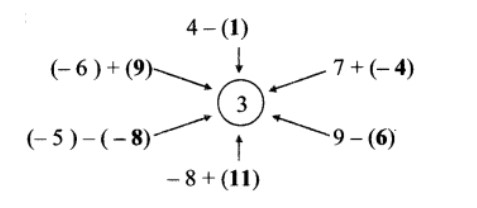Let's learn.
Multiplication of Integers
Mayuri’s bicycle got punctured on the way back from school and she did not have enough money to get it repaired. Sushant, Snehal and Kalpana lent her five rupees each. Thus she borrowed 15 rupees altogether and got the bicycle repaired. We show borrowed money, or a debt, using the ‘-’ (minus) sign. That is, Mayuri had a debt of 15 rupees or Mayuri had -15 rupees.
We see here that (-5) + (-5) + (-5) = -15
Hence note that (-5) × 3 = 3 × (-5) = -15
Of course, Mayuri paid back her debt the next day.
We have learnt the multiplication and division of whole numbers. We have even made tables to carry out the multiplication. Now let us learn to multiply integers i.e. multiplication of numbers in the set that includes negative numbers, positive numbers and zero.
(-3) + (-3) + (-3) + (-3) This addition is the addition of (-3) taken 4 times. It equals -12. It can be written as (-3) × 4 = -12.
Similarly, (-5) × 6 = -30, (-7) × 2 = -14, 8 × (-7) = -56
Now I know!
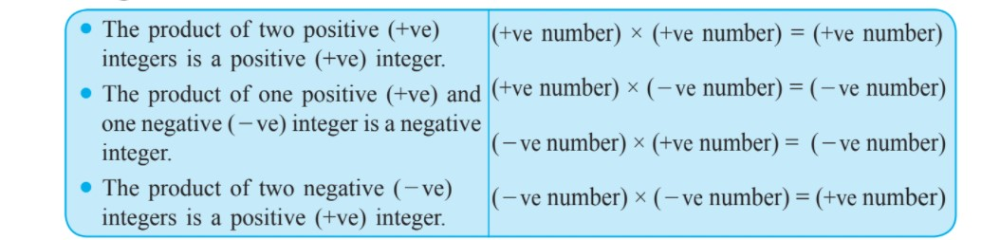PRACTICE SET 1
Q. Multiply:
1. (-5) × (-7) = 35
3. (9) × (-4) = -36
5. (-124) × (-1) = 84
7. (-63) × (-7) = 441
2. (-9) × (6) = -54
4. (8) × (-7) = -56
6. (-12) × (-7) = 84
8. (-7) × (15) = -105
------------------------------------------------------------ ------------------------------------------------------------ -------------------------------------------------
Let's learn.
Division of Integers
We have learnt how to divide one positive integer by another. We also know that the quotient of such a division may be an integer or a fraction.
Exmaple:
On the number line, we can show negative integers on the left of the zero. We can show parts of integers also in the same way.
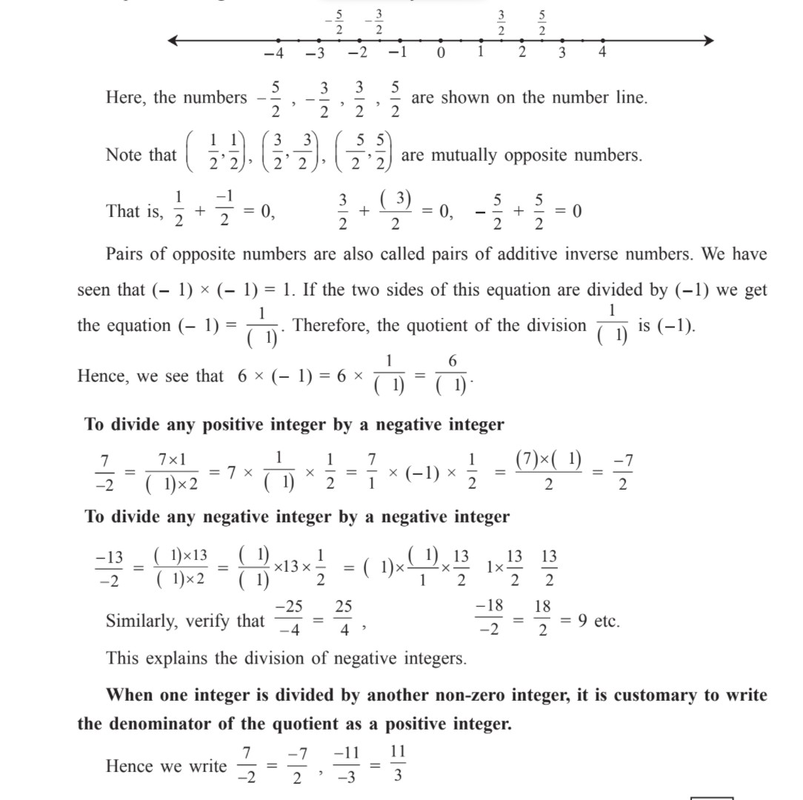PRACTICE SET 2
Q1. Solve.
1. (-96) ÷ 16
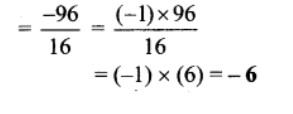3. 98 ÷ (-28)
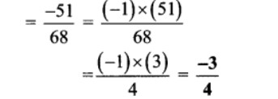5. (-85) ÷ 20
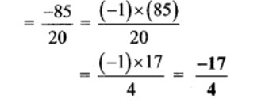7. 100 ÷ 60
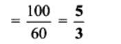9. 78 ÷ 65
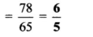2. 98 ÷ (-28)
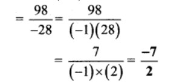4. 38 ÷ (-57)
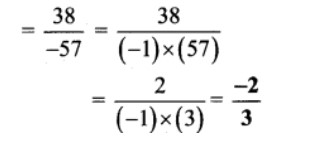6. (-150) ÷ (-25)
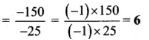8. 9 ÷ (-54))
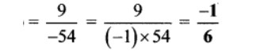10. (-5) ÷ (-315)
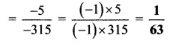Q.2 Write three divisions of integers such that the fractional form of each will be 24/5
Solution:
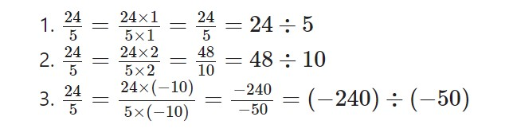Q.3 Write three divisions of integers such that the fractional form of each will be −5/7
Solution:
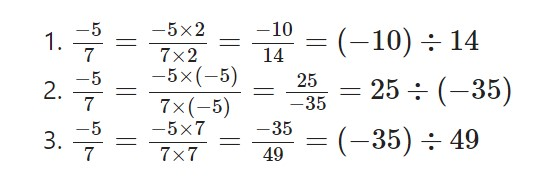Q.4 The fish in the pond below, carry some numbers. (Choose any 4 pairs and carry o ut four multiplications with those numbers. Now, choose four other pairs and carry out divisions with these numbers.
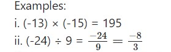
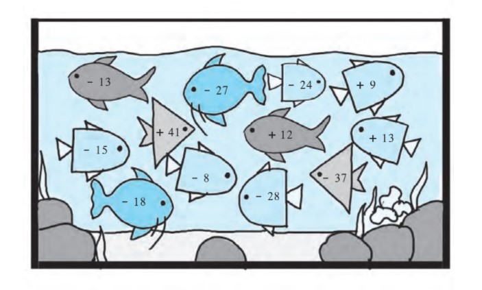Solution:
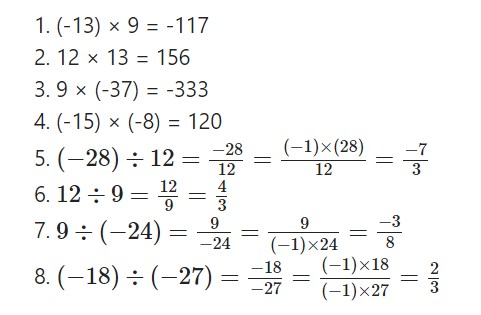